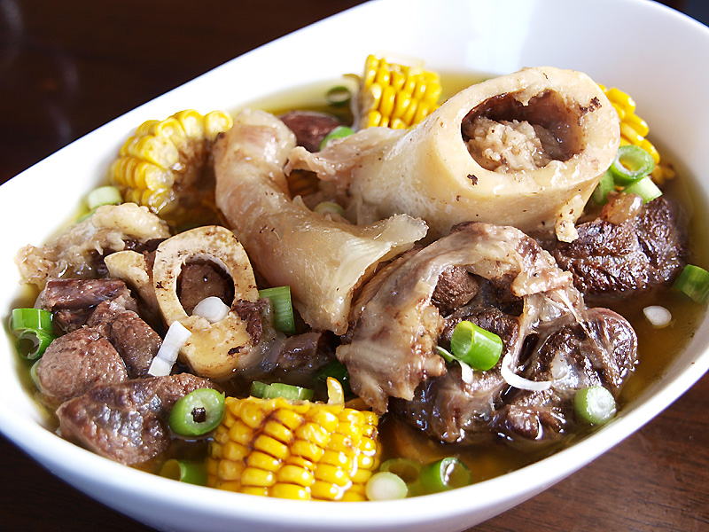

Bulalo Recipe

Ingredients:
- 2 lbs beef shank with bone marrow
- 1 medium onion, quartered
- 1 head of garlic, smashed
- 2 medium potatoes, peeled and sliced
- 2 corn on the cob, cut into 2-inch pieces
- 1 bunch bok choy (pechay)
- 1 medium cabbage, quartered
- 1-2 long green chili peppers (optional)
- 2 tbsp fish sauce (patis)
- Salt and pepper to taste
- 10 cups water
Instructions:
- In a large pot, combine beef shank, onion, garlic, and water. Bring to a boil.
- Once it starts boiling, lower the heat and simmer for 1.5 to 2 hours or until the beef becomes tender. Skim off any scum that rises to the surface.
- Add the fish sauce, salt, and pepper to taste. Continue simmering for another 15 minutes.
- Add the potatoes and corn and cook for another 10 minutes or until tender.
- Add the bok choy and cabbage, then cook for another 5-10 minutes, just until the vegetables are tender but still vibrant.
- If you want some heat, add the long green chili peppers.
- Serve hot with steamed rice. Enjoy!
Back to Menu